🗺️ 9 Destinations Sélectionnées
Classées par adéquation avec vos critères
🏅 1. Rota Vicentina — Côte Alentejane & Algarve
🇵🇹 Portugal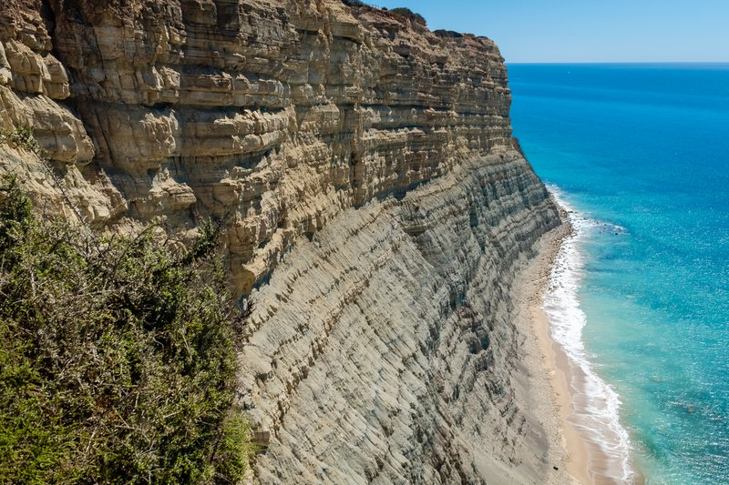
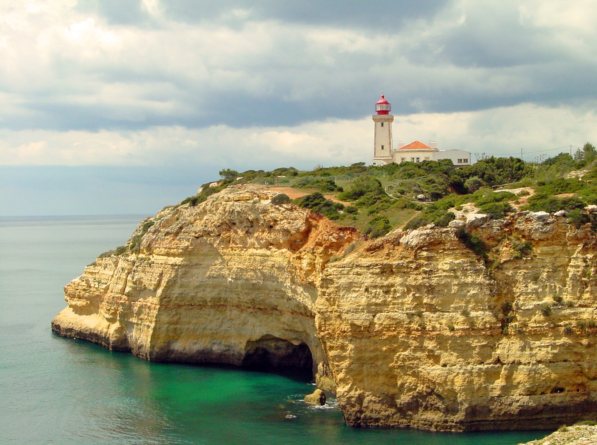
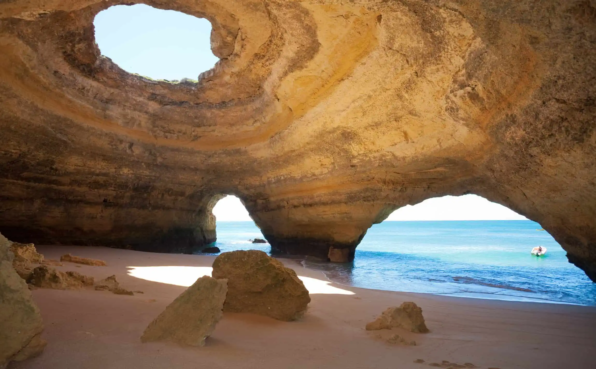
La Rota Vicentina est un réseau de 750 km de sentiers dans le sud-ouest du Portugal, au cœur du Parc Naturel du Sud-Ouest Alentéjan et Côte Vicentine — l'une des zones côtières les plus préservées d'Europe. Le joyau du réseau est le Sentier des Pêcheurs (Trilho dos Pescadores) : 226 km en 13 étapes de single-track côtier sur falaises, 60-70% sablonneux, classé parmi les meilleurs sentiers côtiers au monde. Le Chemin Historique (Caminho Histórico, 263 km) traverse l'intérieur via forêts de chênes-lièges, collines et villages — certifié "Leading Quality Trails – Best of Europe" par l'ERA (2016 & 2020). Des parcours circulaires à la journée complètent le réseau. Curiosité unique : des cigognes blanches nichent au sommet des falaises maritimes, un comportement observé nulle part ailleurs au monde.
📍 Sentier des Pêcheurs — 9 étapes, Porto Covo → Sagres (226 km)
💡 Pour 8 jours : sélection de 7 étapes (ex. Porto Covo → Aljezur). Pour 10 jours : l'intégrale Porto Covo → Sagres avec 1 jour repos.
🌟 Incontournables
- 🏖️ Praia de Odeceixe — Plage entre rivière et océan, élue plus belle du Portugal
- 🏴 Cap Saint-Vincent (Sagres) — Point le plus sud-ouest d'Europe, couchers de soleil épiques
- 🏝️ Île de Pessegueiro — Fort insulaire face à Porto Covo, ruines romaines et eaux turquoise
- 🦅 Cigognes blanches sur les falaises — Comportement de nidification unique au monde (sur pitons rocheux en mer !)
- 🏅 Certification ERA « Best of Europe » — Le Chemin Historique est l'un des rares sentiers à détenir ce label (2016 & 2020)
- 🏄 Arrifana & Praia do Amado — Spots de surf mythiques, falaises vertigineuses
- 🐟 Gastronomie — Poisson grillé, cataplana, pastéis de nata, vinho verde
- 🕳️ Grotte de Benagil — Cathédrale naturelle iconique (excursion en kayak depuis Sagres)
Points forts
- Trek linéaire côtier parfait — itinérant pur
- Plage de sable fin chaque jour (baignade 7-8j/10)
- ✈️ Vol direct Lyon → Faro à 60-90€ A/R (Volotea / Transavia, 2h30)
- Transport bagages bien organisé (dès 15€/étape en direct)
- Site officiel avec réservation intégrée (hébergements, restos, taxis)
- Excellent rapport qualité-prix
- D+ modéré (accessible à tous)
- Gastronomie portugaise et vins
Points d'attention
- Eau de baignade vivifiante (17-19°C — Atlantique)
- Peu d'ombre sur certains tronçons (60-70% sable)
- Paysages moins montagneux
- Vent parfois fort sur la côte
- Max 15 pers/groupe sur le Sentier des Pêcheurs
- Déconseillé aux sujets au vertige (passages de falaise)
🏢 Organismes proposant ce trek
🇫🇷 Agences françaises :
- Chamina Voyages — Rota Vicentina – Chemin des Pêcheurs (liberté, 7j/6n) — à partir de 690€/pers (hors vol). Hébergement + pdj + transfert bagages. Note clients : 4.4/5 (99 avis)
- Espace Randonnée — Rota Vicentina 8j/7n, V.N. Milfontes → Sagres — à partir de 779€/pers. Hôtels 3-4★, transfert bagages, app GPS
- Hillwalk Tours — Sentier des Pêcheurs — plusieurs formules — à partir de 725€/pers
- Terres d'Aventure — "L'Algarve des trois printemps" POR023 (accompagné, 8j) — 2 030€/pers vol inclus (départ 13/06/2026, assuré dès 5 pers)
- Terdav Liberté — 4 formules liberté Algarve — côtier / étoile / itinérant / combo rail
🌍 Agences internationales / partenaires officiels :
- S-Cape Travel (partenaire officiel Rota Vicentina) — Fishermen's Trail 8j — à partir de 586-679€/pers, intégrale 14j dès 1 119€
- Rota Vicentina (site officiel) — Réservation directe hébergements, restaurants, taxis — Programmes clé-en-main — Boutique cartes & guides
🧳 Transfert bagages seul (si organisation perso) :
- Vicentina Transfers — vicentinatransfers.pt — 15€/étape (4+ transferts) ou 20€/étape (<4). Jusqu'à 2 sacs, +5€/sac sup. Fév-nov.
- Luggage Driver — luggagedriver.com — Tarifs similaires, Porto Covo → Lagos
💰 Budget estimé par personne (8-10 jours)
🥈 2. Croatie — Îles Dalmates & Dubrovnik
🇭🇷 Croatie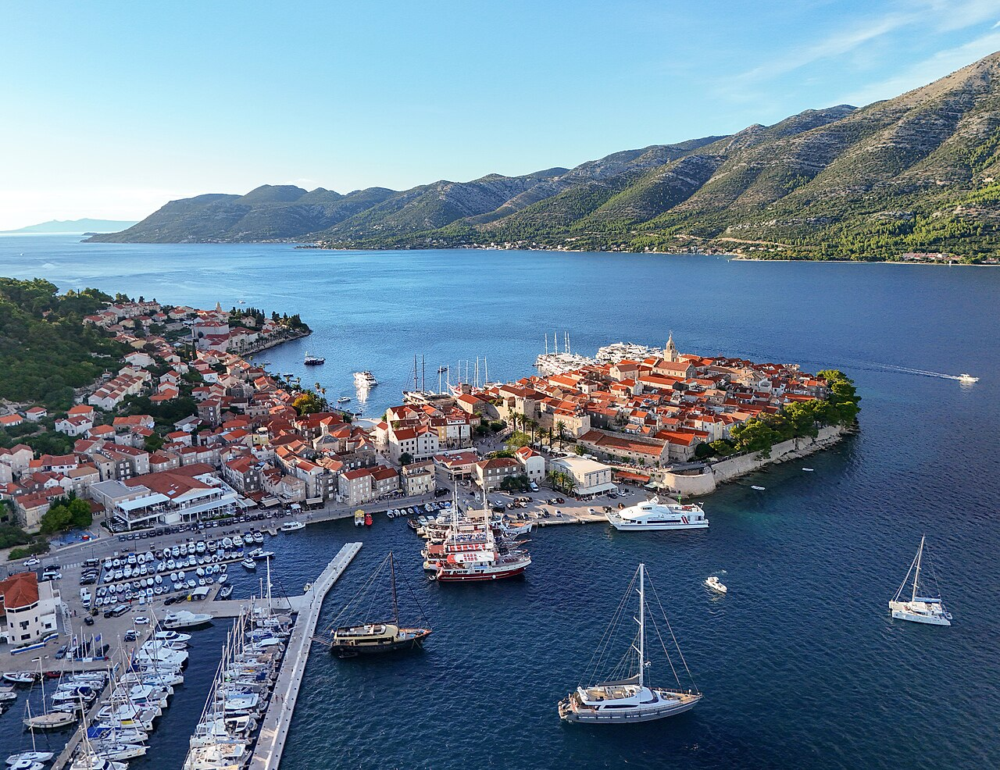
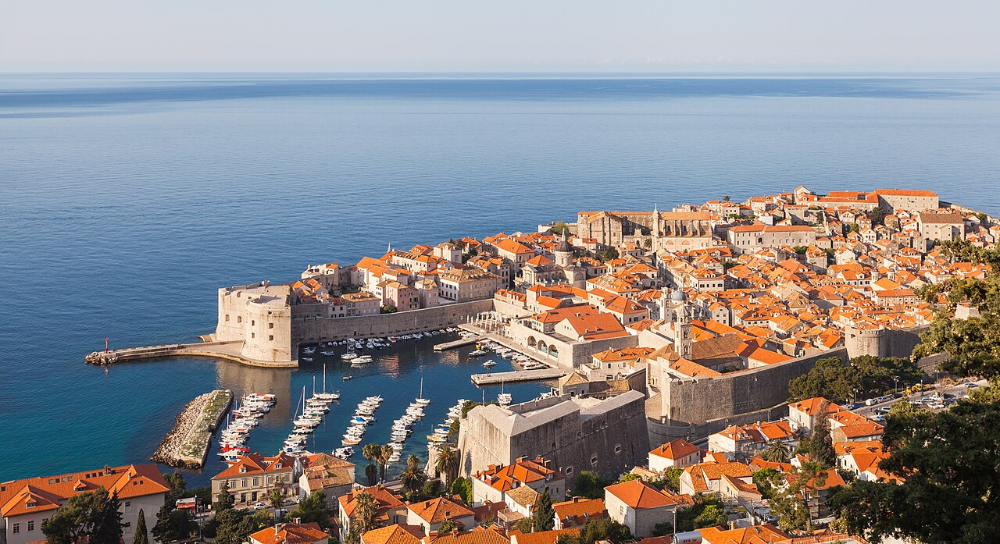
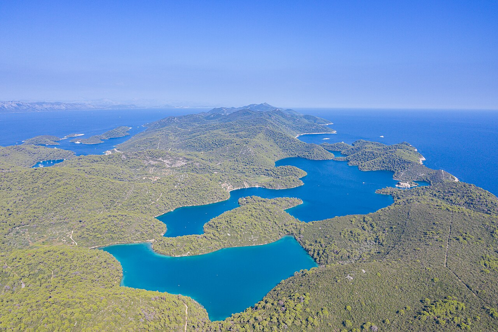
Les îles dalmates offrent un cadre idéal pour combiner randonnée côtière et baignade quotidienne en mer Adriatique cristalline. L'itinéraire se concentre sur l'île de Korčula (ville natale supposée de Marco Polo), le Parc National de Mljet et culminera à Dubrovnik, la "Perle de l'Adriatique". Maquis méditerranéen, forêts de pins, criques secrètes et patrimoine vénitien : la Croatie est le secret le mieux gardé pour les randonneurs méditerranéens.
📍 Itinéraire type (10 jours)
🌟 Incontournables
- 🏝️ Parc National de Mljet — Lacs salés émeraude, monastère bénédictin sur son île
- 🏰 Dubrovnik — Remparts UNESCO, "la Perle de l'Adriatique"
- 🍷 Korčula — Ville natale de Marco Polo, vin blanc Grk unique
- 🎣 Trabucchi — Pêcheries traditionnelles sur pilotis
- 🏖️ Pržina — L'une des rares plages de sable de Croatie
- 🌿 Kočje — Réserve naturelle, chaos rocheux et arbres centenaires
Points forts
- Baignade quotidienne (mer la plus chaude)
- Patrimoine UNESCO exceptionnel (Dubrovnik)
- Gastronomie méditerranéenne (fruits de mer, vin)
- Peu fréquenté en juin (avant le rush)
- Format itinérant île en île
Points d'attention
- Pas de vol direct Lyon→Dubrovnik (escale)
- Transferts en ferry entre les îles
- Dénivelés modestes (pas de haute montagne)
- Sentiers moins balisés que Madère/Camino
- Budget transport un peu plus élevé
🏢 Organismes proposant ce trek
- Chamina Voyages — Îles Dalmates et Dubrovnik (liberté)
- Inntravel — Dalmatian Island Hopping
- Exodus — Croatia Walking Holidays
- Croatia Walks — Randonnées sur mesure en Croatie
💰 Budget estimé par personne (10 jours)
🥉 3. Tenerife — Du Teide à l'Océan
🇪🇸 Espagne (Îles Canaries)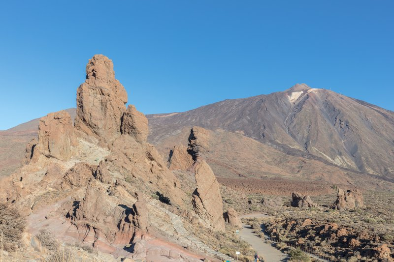
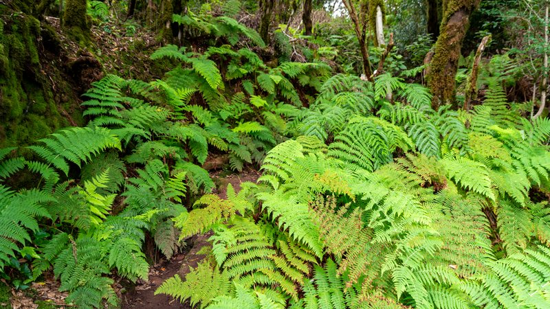
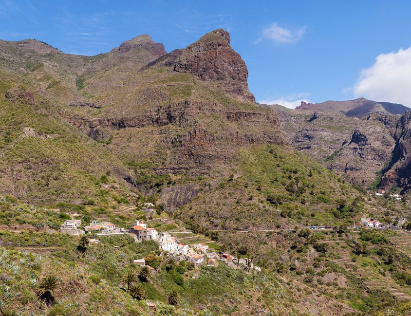
Tenerife est un continent miniature. En 10 jours, on passe des paysages lunaires du Teide (3 718 m, plus haut sommet d'Espagne, UNESCO) aux forêts tropicales du massif d'Anaga, des gorges vertigineuses de Masca aux plages de sable noir volcanique. Le format semi-itinérant (3 bases + étoile) permet une immense variété de paysages.
🌟 Incontournables
- 🌋 Parc National du Teide — UNESCO, paysages lunaires, caldeira géante
- 🌿 Massif d'Anaga — Réserve de biosphère, forêt laurifère primaire
- 🏘️ Masca — Village isolé dans des gorges spectaculaires, descente vers la mer
- 🏊 Garachico — Piscines naturelles dans la lave, village historique
- 🖤 Playa de Benijo — Plage de sable noir avec rochers volcaniques
- 🌅 Los Gigantes — Falaises de 600 m plongeant dans l'océan
Points forts
- Diversité de paysages incroyable
- Teide UNESCO — expérience unique
- Baignade possible chaque jour
- Bon rapport qualité-prix
- Vols directs nombreux et abordables
- Météo quasi garantie
Points d'attention
- Pas de trek linéaire — format en étoile
- Voiture nécessaire pour les transferts
- Sentier de Masca : réservation obligatoire
- Zone touristique sur la côte sud
- D+ pouvant être important (Teide)
🏢 Organismes proposant ce trek
- Terres d'Aventure — "Tenerife + Gomera, randonnées enchantées" (liberté, 10j) — à partir de 640€/pers
- Chamina Voyages — Tenerife en liberté
- La Balaguère — Canaries rando (accompagné ou liberté)
- Allibert Trekking — Tenerife randonnée
💰 Budget estimé par personne (10 jours)
4. Gargano — Pouilles & Foresta Umbra
🇮🇹 Italie (Pouilles)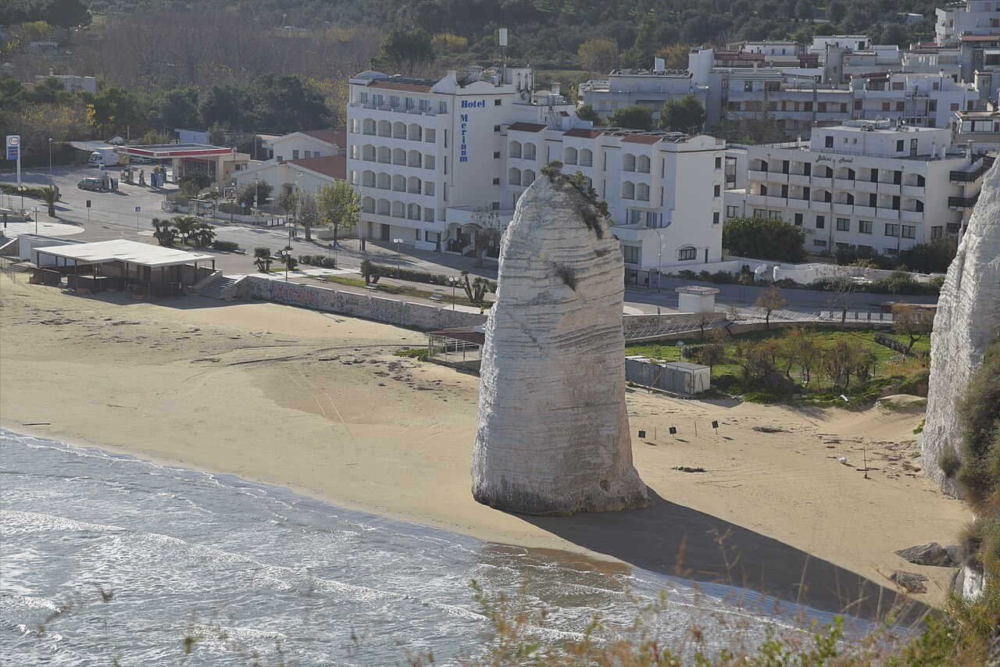
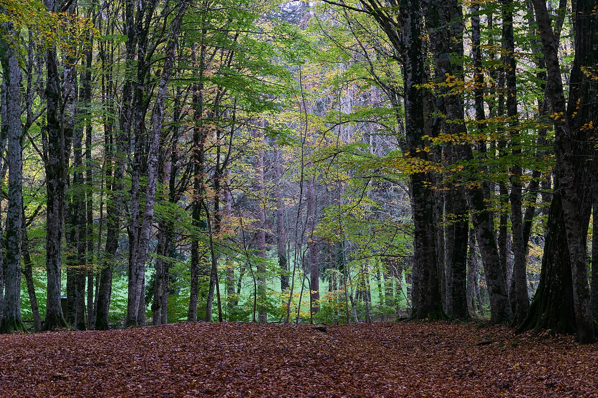
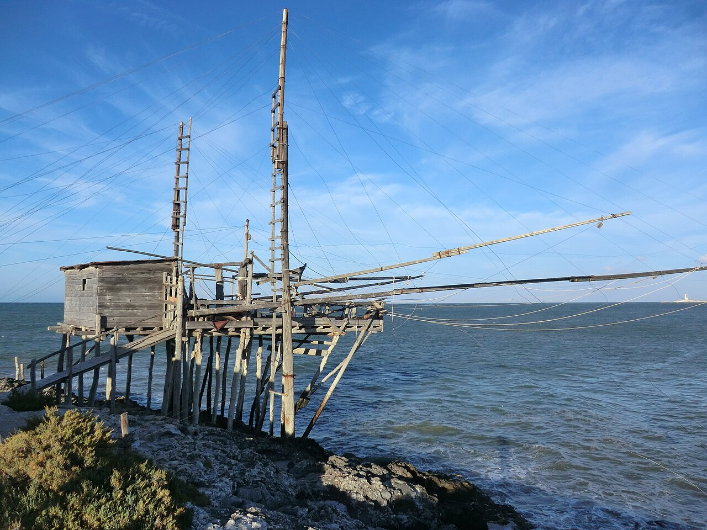
La péninsule du Gargano — l'"éperon" de la botte italienne — est un joyau méconnu des Pouilles. Ce Parc National combine falaises de calcaire blanc plongeant dans une mer émeraude, la Foresta Umbra (forêt ancestrale classée UNESCO, la plus grande d'Europe méridionale), et les villages de pèlerinage perchés comme Monte Sant'Angelo. Plus de 80 espèces d'orchidées sauvages, les trabucchi (pêcheries ancestrales sur pilotis) et la gastronomie des Pouilles font de cette destination une pépite authentique et peu fréquentée.
📍 Itinéraire type (9 jours)
🌟 Incontournables
- 🌳 Foresta Umbra — Forêt ancestrale UNESCO, ambiance mystérieuse
- ⛪ Monte Sant'Angelo — Sanctuaire grotte de Saint-Michel (UNESCO), pèlerinage depuis le Ve siècle
- 🎣 Trabucchi — Pêcheries ancestrales sur pilotis, uniques au Gargano
- 🌺 Orchidées sauvages — Plus forte concentration d'Europe (80+ espèces)
- 🏖️ Vieste — Vieille ville blanche sur l'éperon, plages turquoise
- 🍝 Gastronomie pouillaise — Orecchiette, burrata, huile d'olive, pain d'Altamura
Points forts
- Paysages très variés (côte + forêt + montagne)
- Gastronomie pouillaise exceptionnelle
- Très peu touristique en juin
- Authenticité et prix raisonnables
- Patrimoine UNESCO (Foresta Umbra + Monte Sant'Angelo)
Points d'attention
- Pas de vol direct Lyon→Bari (escale)
- Transferts routiers assez longs (Bari→Vieste 2h30)
- Pas de baignade les jours en forêt
- Sentiers parfois mal balisés
- Moins d'offres organisées que les îles
🏢 Organismes proposant ce trek
- Inntravel — Puglia's Gargano Peninsula (liberté, 7 nuits) — à partir de £1 240/pers
- Chamina Voyages — Randonnées en Italie du Sud
- Hedonistic Hiking — Randonnées gastronomiques en Pouilles
- Puglia Walking — Randonnées sur mesure dans les Pouilles
💰 Budget estimé par personne (9 jours)
5. Madère — Levadas & Sommets
🇵🇹 Portugal (Archipel de Madère)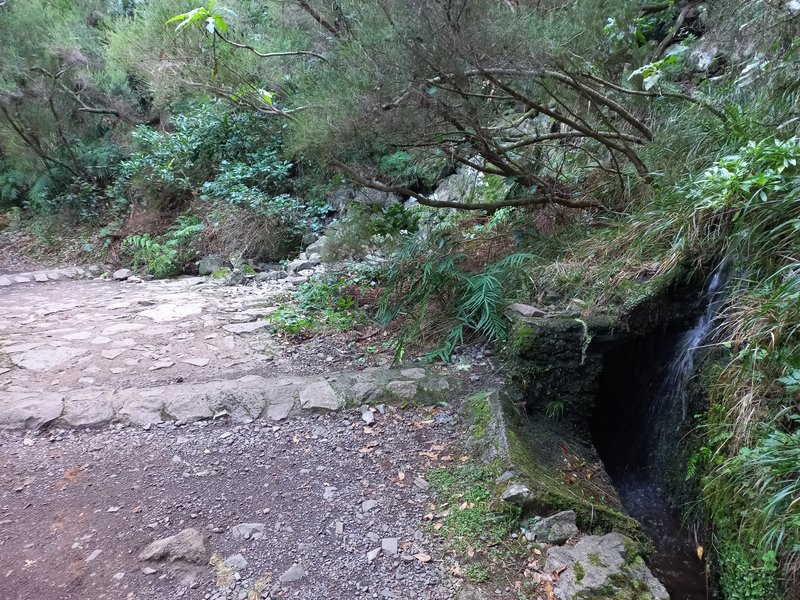
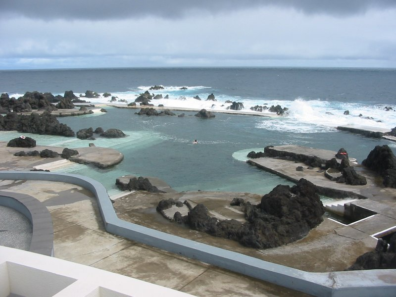
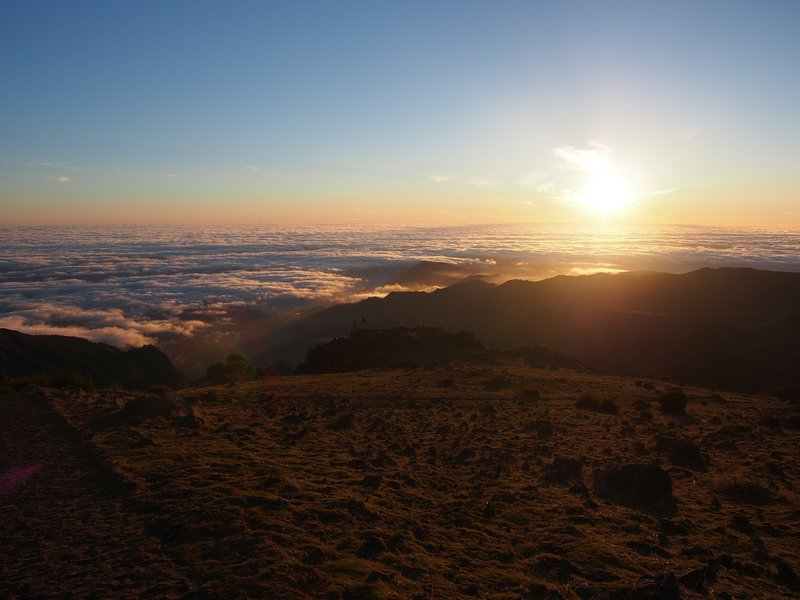
L'île aux fleurs est un paradis pour les randonneurs. Ses célèbres levadas (canaux d'irrigation du XVe siècle) offrent des sentiers horizontaux uniques à travers la forêt laurifère (UNESCO). En complément, les sentiers de crête entre le Pico do Arieiro et le Pico Ruivo offrent des panoramas au-dessus des nuages. L'île combine un format semi-itinérant (base + étoile ou transferts entre zones) avec une variété de paysages exceptionnelle : forêt tropicale, falaises maritimes, sommets volcaniques et villages traditionnels.
📍 Itinéraire type (10 jours)
🌟 Incontournables
- 🌿 Forêt laurifère — Forêt primaire classée UNESCO, unique en Europe
- 🏔️ Pico Ruivo (1 862 m) — Plus haut sommet, marche au-dessus des nuages
- 🌊 Porto Moniz — Piscines naturelles taillées dans la lave
- 💧 Levada das 25 Fontes — 25 cascades dans un amphithéâtre verdoyant
- 🏘️ Câmara de Lobos — Village de pêcheurs peint par Winston Churchill
- 🍷 Vin de Madère — Dégustation dans les caves de Funchal
Points forts
- Paysages extraordinairement variés
- Météo parfaite en juin (jamais trop chaud)
- Levadas = sentiers plats et accessibles
- Forêt laurifère UNESCO unique
- Gastronomie portugaise excellente
- Sécurité et infrastructures au top
Points d'attention
- Pas de trek linéaire pur — format semi-itinérant
- Baignade en piscines naturelles plutôt que plages de sable
- Transferts en voiture entre randonnées
- Vertige sur certains sentiers de crête
- Transport bagages = location de voiture (pas d'organisme dédié)
🏢 Organismes proposant ce trek
- Terres d'Aventure — "Madère toute liberté" (liberté, 8j/7n) — à partir de 700€/pers
- Chamina Voyages — Madère en liberté (8j) — avec transfert bagages
- Allibert Trekking — Randonnée liberté Madère (8j)
- La Balaguère — Trek accompagné ou liberté Madère
- Altitude Montblanc — Séjour randonnée Madère
💰 Budget estimé par personne (10 jours)
6. GR 221 — Serra de Tramuntana, Majorque
🇪🇸 Espagne (Îles Baléares)


La Ruta de Pedra en Sec (Route de la Pierre Sèche) traverse la Serra de Tramuntana, classée au patrimoine mondial de l'UNESCO. Le sentier longe la côte nord-ouest de Majorque, offrant des panoramas spectaculaires entre montagne et Méditerranée, des villages en pierre comme Deià, Valldemossa et Sóller.
🌟 Incontournables
- 🏔️ Serra de Tramuntana — Paysage montagneux UNESCO, terrasses d'oliviers millénaires
- 🏘️ Deià — Village d'artistes perché, couchers de soleil mythiques
- 🏛️ Valldemossa — Chartreuse où séjournèrent Chopin et George Sand
- 🚂 Sóller — Vieux tramway, orangeraies, port pittoresque
- 🌊 Sa Calobra / Torrent de Pareis — Canyon spectaculaire rejoignant la mer
- ⛰️ Puig de Massanella (1 365 m) — Plus haut sommet accessible, vue à 360°
Points forts
- Paysage UNESCO exceptionnel
- Infrastructure hôtelière de qualité
- Transport bagages très bien organisé
- Gastronomie méditerranéenne
- Vols low-cost nombreux et abordables
Points d'attention
- Peut être chaud fin juin (30°C+)
- Baignade pas toujours directe sur le parcours
- 8 jours seulement (un peu court)
- Zone touristique — réserver tôt
🏢 Organismes proposant ce trek
- Chamina Voyages — GR221 Majorque Serra Tramuntana (liberté)
- Inntravel — Mallorca Mountains to Sea
- Terres d'Aventure — Majorque randonnée (chercher "Majorque")
- La Balaguère — Serra de Tramuntana (accompagné ou liberté)
💰 Budget estimé par personne (8 jours)
7. Lacs Italiens — Majeur, Orta & Côme
🇮🇹 Italie du Nord (Lombardie / Piémont)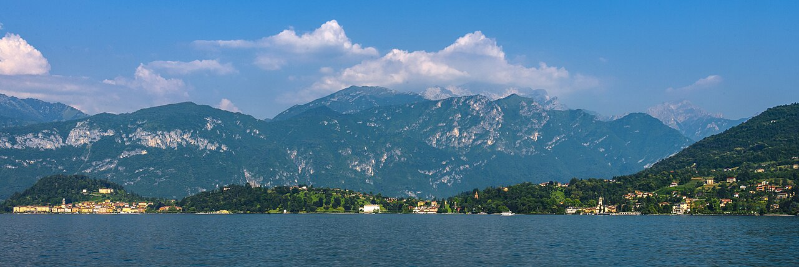
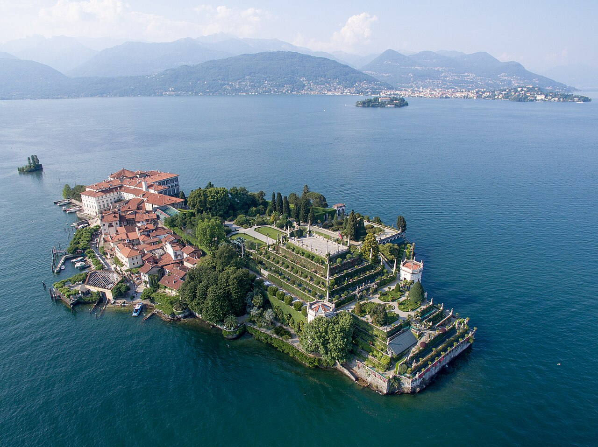
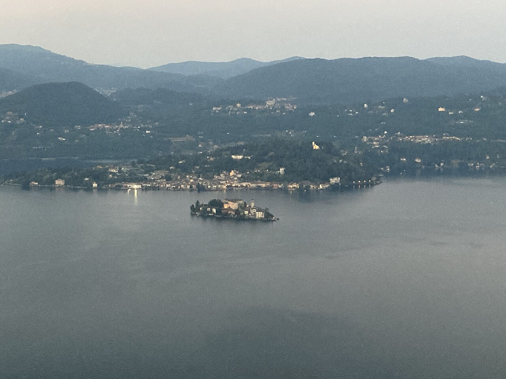
Les Grands Lacs Italiens sont un trésor alpin à seulement 3h30 de Lyon : c'est la destination la plus accessible de la sélection. Du Lac Majeur et ses Îles Borromées au Lac de Côme avec la perle de Bellagio, en passant par le secret Lac d'Orta et son île San Giulio — chaque lac offre une ambiance différente. Les randonnées préalpines combinent forêts de châtaigniers, villages de pierre, panoramas sur les lacs turquoise et descentes vers des villas aristocratiques bordées de jardins botaniques.
📍 Itinéraire type (10 jours)
🌟 Incontournables
- 🏝️ Îles Borromées — Jardins baroques d'Isola Bella, palais et paons blancs
- 🏘️ Bellagio — La "perle du lac de Côme", ruelles fleuries et gelato
- ⛪ Orta San Giulio — Île mystique, basilique romane, Sacro Monte UNESCO
- 🏔️ Monte San Primo — Panorama 360° sur Côme, Lecco et les Alpes
- 🌿 Val Grande — Parc National le plus sauvage d'Italie, nature intacte
- 🍝 Gastronomie — Risotto, polenta, poissons du lac, vins de Piémont
Points forts
- Seulement 3h30 de Lyon en voiture (pas de vol !)
- Paysages alpins + lacs turquoise sublimes
- Baignade quotidienne dans les lacs
- Gastronomie italienne exceptionnelle
- Pas cher (hébergement + repas abordables)
- Flexibilité totale (voiture)
Points d'attention
- Pas de mer (baignade en lac uniquement)
- Pas de formule organisée type "liberté"
- Transport bagages à gérer soi-même (voiture)
- Risque d'orages en fin de journée (préalpes)
- Moins dépaysant que les îles
- Tourisme de masse à Côme en été (mais juin c'est OK)
🏢 Organismes proposant ce trek
- Rando en liberté — Lac de Côme en liberté (7j)
- Grand Angle — Randonnées en Italie du Nord
- Allibert — Lacs Italiens en randonnée
- Auto-organisé — Facile en voiture depuis Lyon, hébergements B&B / agriturismo
💰 Budget estimé par personne (10 jours)
8. Camino del Norte — Côte Cantabrique
🇪🇸 Espagne (Pays Basque → Cantabrie)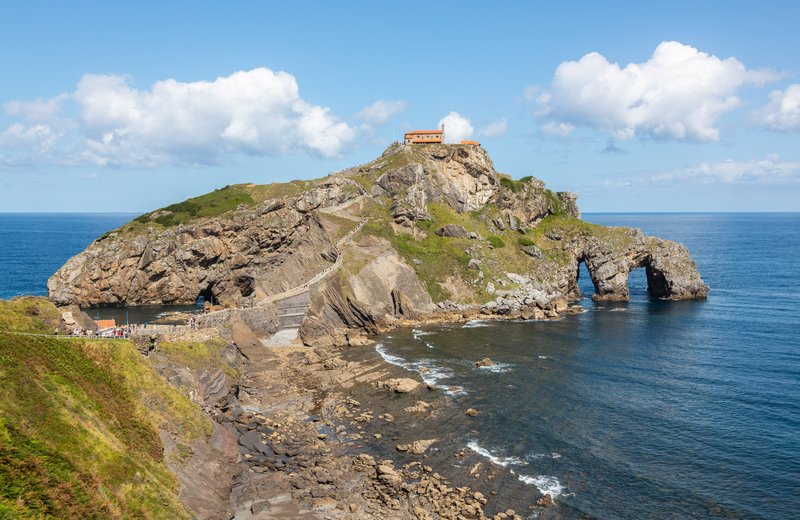
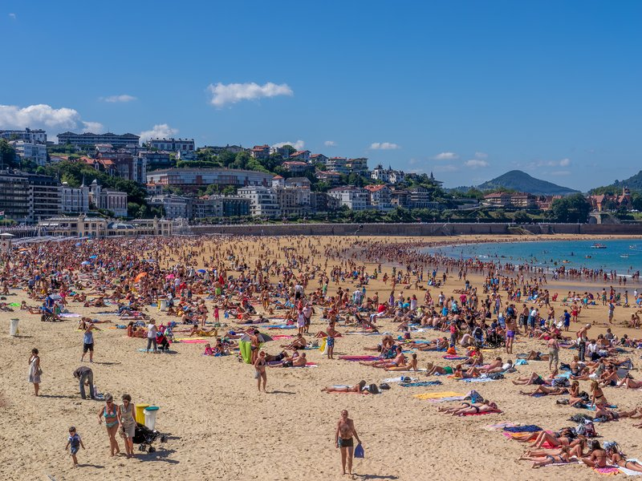
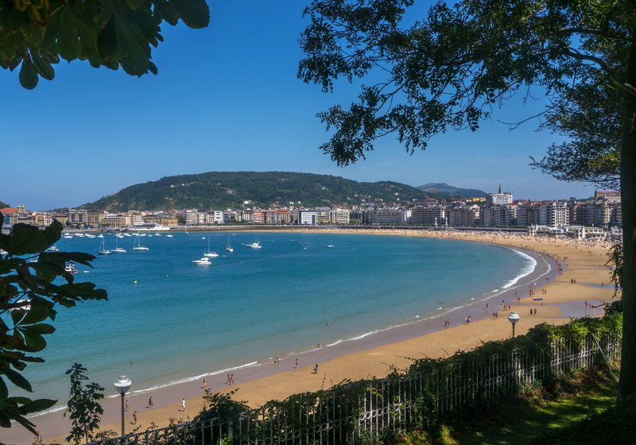
Le Camino del Norte longe la côte nord de l'Espagne. La section San Sebastián → Bilbao offre 10 jours de marche entre falaises, plages de surf, villages de pêcheurs et villes culturelles. Météo parfaite en juin. La logistique du Camino est sans égale : transport de bagages, hébergements, balisage.
🌟 Incontournables
- 🎨 Musée Guggenheim Bilbao — Architecture iconique de Frank Gehry
- 🍴 San Sebastián — Capitale mondiale des pintxos et de la gastronomie
- 🏖️ Plage de la Concha — Parmi les plus belles plages urbaines au monde
- ⛪ San Juan de Gaztelugatxe — Ermitage sur une presqu'île, décor de Peyredragon
- 🏘️ Getaria — Village de pêcheurs, berceau de Balenciaga
- 🌊 Flysch de Zumaia — Falaises géologiques de 60 millions d'années
Points forts
- Météo parfaite en juin (18-25°C)
- Meilleure gastronomie d'Europe
- Transport bagages ultra organisé (Camino)
- Trek parfaitement linéaire et balisé
- Excellent rapport qualité-prix
Points d'attention
- Eau de baignade plus fraîche (18-20°C)
- Risque de pluie (côte atlantique)
- Étapes parfois > 20 km
- Ambiance « pèlerinage » sur certains tronçons
🏢 Organismes proposant ce trek
- Terres d'Aventure — "Galice, chemin des phares" (liberté, 8j) — à partir de 620€/pers
- Follow the Camino — Camino del Norte sur mesure
- CaminoWays — Camino del Norte (liberté, bagages inclus)
- Jacotrans / Correos — Transport de bagages sur le Camino
- Chamina Voyages — Chemin de Compostelle (liberté)
💰 Budget estimé par personne (10 jours)
9. Cap-Vert — Santo Antão, Fogo & Mindelo
🇨🇻 Cap-Vert (Afrique de l'Ouest)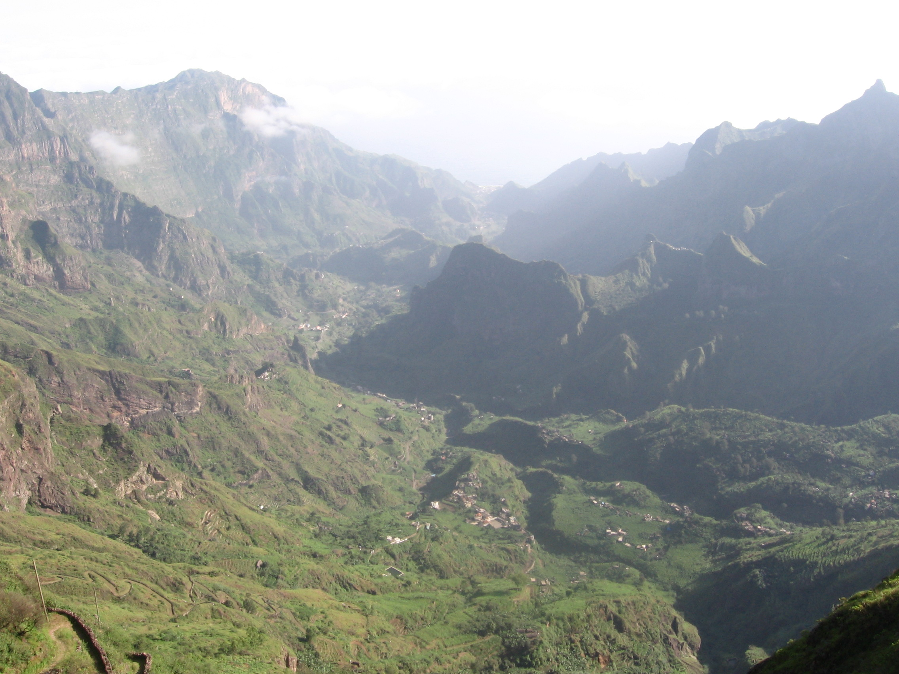

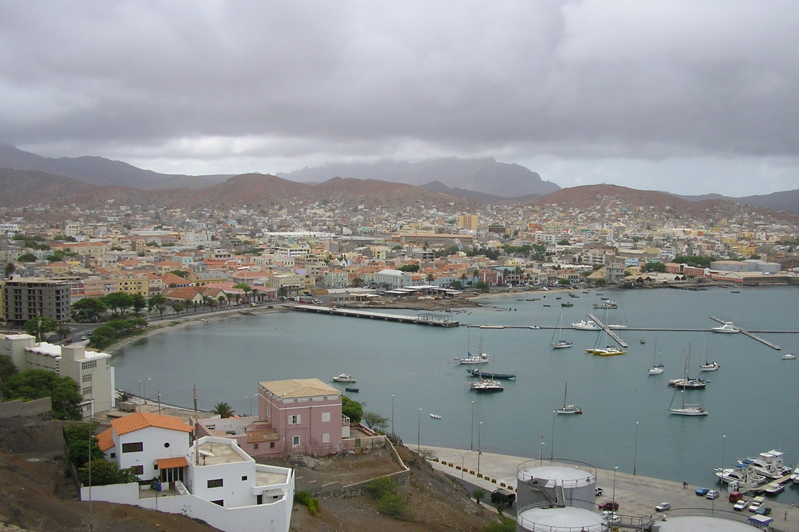
Le Cap-Vert est un archipel volcanique au large du Sénégal, paradis des randonneurs en quête de dépaysement total. L'île de Santo Antão offre des paysages spectaculaires : ribeiras (vallées encaissées) luxuriantes, terrasses cultivées vertigineuses, sentiers à flanc de falaise et villages perchés inaccessibles. L'île de Fogo impressionne avec son volcan actif culminant à 2 829 m et sa caldeira lunaire habitée. Mindelo (São Vicente), berceau de Cesária Évora, apporte la touche culturelle et musicale. C'est la destination la plus dépaysante de la sélection, mais aussi la plus éloignée.
⚠️ Note importante : Le Cap-Vert n'est pas en Europe (Afrique de l'Ouest). Pas de visa requis pour les Français, mais taxe d'entrée ~30 €. Monnaie : Escudo capverdien (1 € = 110 CVE).
📍 Itinéraire type (10 jours)
🌟 Incontournables
- 🌋 Pico do Fogo (2 829 m) — Volcan actif, ascension dans les cendres, caldeira habitée
- 🏔️ Fontainhas — Village le plus spectaculaire du Cap-Vert, accroché à la falaise
- 🌿 Vallée de Paúl — Terrasses tropicales, canne à sucre, grogue (rhum local)
- 🎵 Mindelo — Berceau de Cesária Évora, bars de morna et coladeira
- 🍷 Vin de Fogo — Vignobles volcaniques dans la caldeira, dégustation unique
- 🏖️ Tarrafal — Baie isolée, plage de sable noir, village de pêcheurs
Points forts
- Dépaysement total (Afrique, tropiques, créole)
- Paysages volcaniques à couper le souffle
- Authenticité et rencontres (villages isolés)
- Ascension d'un vrai volcan actif (2 829 m)
- Culture musicale unique (morna, Cesária Évora)
- Gastronomie métissée (cachupa, grogue, café)
Points d'attention
- Hors Europe (vol long via Lisbonne, 8-10h)
- Budget plus élevé (vols inter-îles + international)
- Baignade limitée (4-5 jours sur 10)
- Confort basique (pensions, pas d'hôtels 4★)
- Logistique complexe (ferries, vols inter-îles)
- Pas de formule liberté avec transfert bagages facile
🏢 Organismes proposant ce trek
- Allibert Trekking — "Sentiers métissés du Cabo Verde" (16j, 4 îles) — à partir de 1 295€
- La Balaguère — 10 circuits Cap-Vert (groupe + liberté) — liberté dès 795€ hors vol
- Grand Angle — "Archipel du Sud au Nord" (15j, 5 îles) — 2 550€ vol inclus, départ 21/06/2026 garanti
- La Balaguère (liberté) — "Montagnes et vallées de Santo Antão" (8j liberté) — à partir de 795€ hors vol
- Exodus Travels — Cape Verde Walking (chercher "Cape Verde")
- HF Holidays — Cape Verde Guided Walking (12j) — £2 199 terrestre
💰 Budget estimé par personne (10 jours)
📊 Tableau Comparatif
Vue d'ensemble pour faciliter votre choix
| Destination | Durée | km/jour | D+/jour | Météo | Baignade | Budget/pers. | Itinérant | Transport bagages | Note |
|---|---|---|---|---|---|---|---|---|---|
| 🏅 Rota Vicentina (175 pts) | 10 j | 15-20 | 200-500 | 22-28°C ☀️ | Plages sable 🏖️ | 720-1 310 € | Linéaire | ★★★★☆ | ★★★★★ |
| 🥈 Croatie Dalmate (174 pts) | 10 j | 10-16 | 200-450 | 27-30°C ☀️ | Mer cristalline 🏊 | 900-1 400 € | Mixte (îles) | ★★★★☆ | ★★★★☆ |
| 🥉 Tenerife (169 pts) | 10 j | 10-18 | 400-1000 | 22-28°C ☀️ | Plages noires 🖤 | 770-1 330 € | Mixte | Voiture 🚗 | ★★★★☆ |
| 4. Gargano Pouilles (165 pts) | 9 j | 8-15 | 150-770 | 24-30°C ☀️ | Plages + grottes 🏖️ | 930-1 470 € | Itinérant | ★★★★☆ | ★★★★☆ |
| 5. Madère (162 pts) | 10 j | 10-16 | 400-900 | 20-26°C ☀️ | Piscines naturelles | 880-1 500 € | Mixte | Voiture 🚗 | ★★★★☆ |
| 6. GR221 Majorque (156 pts) | 8 j | 15-20 | 500-1000 | 22-30°C ☀️ | Criques 🏊 | 830-1 430 € | Linéaire | ★★★★★ | ★★★☆☆ |
| 7. Lacs Italiens (155 pts) | 10 j | 10-18 | 500-1000 | 22-28°C 🌤️ | Lacs alpins 🏊 | 860-1 300 € | Mixte (voiture) | Voiture 🚗 | ★★★☆☆ |
| 8. Camino del Norte (152 pts) | 10 j | 18-22 | 300-700 | 18-25°C 🌤️ | Océan (frais) 🌊 | 740-1 290 € | Linéaire | ★★★★★ | ★★★☆☆ |
| 9. Cap-Vert (143 pts) | 10 j | 10-18 | 400-1000 | 24-28°C ☀️ | Limitée 🏖️ | 1 200-1 800 € | Multi-îles | ★★★★☆ | ★★★☆☆ |